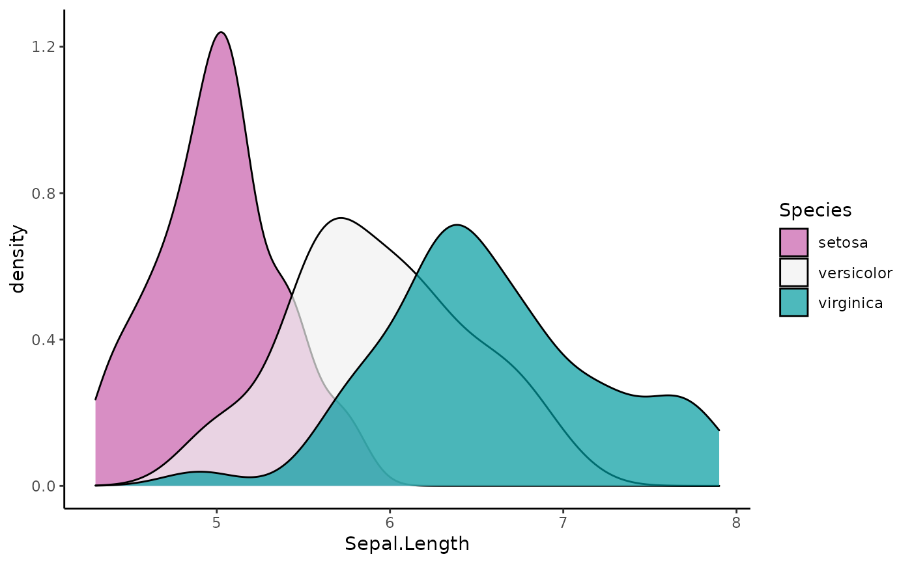

scale_colour_discrete_divergingx.RdDiscrete ggplot2 color scales using the color palettes generated by divergingx_hcl.
scale_colour_discrete_divergingx( palette = "Geyser", c1 = NULL, c2 = NULL, c3 = NULL, l1 = NULL, l2 = NULL, l3 = NULL, h1 = NULL, h2 = NULL, h3 = NULL, p1 = NULL, p2 = NULL, p3 = NULL, p4 = NULL, cmax1 = NULL, cmax2 = NULL, alpha = 1, rev = FALSE, nmax = NULL, order = NULL, aesthetics = "colour", ... ) scale_color_discrete_divergingx( palette = "Geyser", c1 = NULL, c2 = NULL, c3 = NULL, l1 = NULL, l2 = NULL, l3 = NULL, h1 = NULL, h2 = NULL, h3 = NULL, p1 = NULL, p2 = NULL, p3 = NULL, p4 = NULL, cmax1 = NULL, cmax2 = NULL, alpha = 1, rev = FALSE, nmax = NULL, order = NULL, aesthetics = "colour", ... ) scale_fill_discrete_divergingx(..., aesthetics = "fill")
| palette | The name of the palette to be used. |
|---|---|
| h1, h2, h3, c1, c2, c3, l1, l2, l3, p1, p2, p3, p4, cmax1, cmax2 | Parameters to customize the scale. See |
| alpha | Numeric vector of values in the range |
| rev | If |
| nmax | Maximum number of different colors the palette should contain. If not provided, is calculated automatically from the data. |
| order | Numeric vector listing the order in which the colors should be used. Default is |
| aesthetics | The ggplot2 aesthetics to which this scale should be applied. |
| ... | common discrete scale parameters: |
Available CARTO palettes: ArmyRose, Earth, Fall, Geyser, TealRose, Temps, Tropic.
Available ColorBrewer.org palettes: Spectral, PuOr, RdYlGn, RdYlBu, RdGy, BrBG, PiYG, PRGn, RdBu.
If both a valid palette name and palette parameters are provided then the provided palette parameters overwrite the parameters in the named palette. This enables easy customization of named palettes.
library("ggplot2") # default color scale ggplot(iris, aes(Sepal.Length, Sepal.Width, color = Species)) + geom_point() + theme_minimal() + scale_color_discrete_divergingx()# color scale "Tropic" ggplot(iris, aes(Sepal.Length, fill = Species)) + geom_density(alpha = 0.7) + theme_classic() + scale_fill_discrete_divergingx(palette = "Tropic", rev = TRUE)# use `nmax` and `order` to skip some colors ggplot(iris, aes(Sepal.Length, fill = Species)) + geom_density(alpha = 0.7) + theme_classic() + scale_fill_discrete_divergingx(palette = "Tropic", nmax = 5, order = c(1, 4, 5))